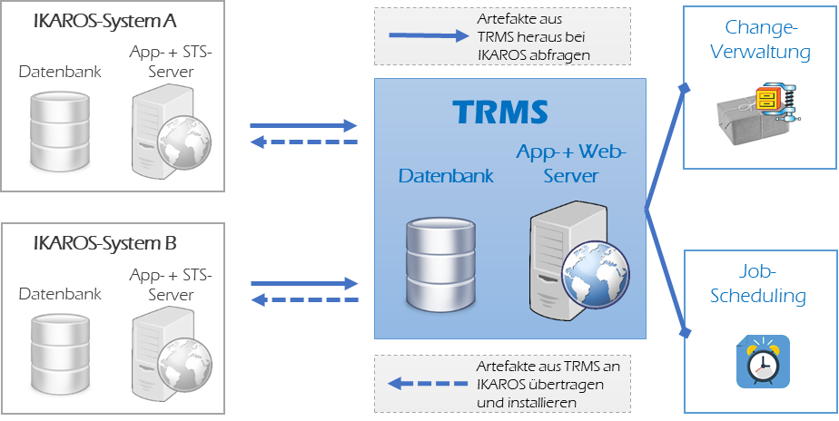

Mit dem TRMS als zentraler
Verwaltung können Sie so zwischen IKAROS-Umgebungen (die
mindestens Versionsstand 2019.2 haben müssen) Ihr eigenes Customizing
austauschen, beispielsweise:
Mit dem TRMS als zentraler
Verwaltung können Sie so zwischen IKAROS-Umgebungen (die
mindestens Versionsstand 2019.2 haben müssen) Ihr eigenes Customizing
austauschen, beispielsweise:Verwendungsszenario für das TRMS
In der Praxis werden typischerweise mehrere IKAROS-Umgebungen genutzt – mindestens, wie von Ferber-Software dringend empfohlen, eine von der Produktivumgebung getrennte Test- und/oder Integrationsumgebung. Dadurch entsteht zwangsläufig der Bedarf, in einer Umgebung erstellte benutzerdefinierte Elemente wie Vorgangsvorlagen, Custom-Code-Programmierungen, Workflows, Kosten- und EP-Verträge usw. in andere Systeme zu übertragen, z. B. nach erfolgreichen Tests von der Integrations- in die Produktivumgebung.
IKAROS bietet für diesen Bedarf das Transport- und Release-Management-System (TRMS) an. Es handelt sich dabei um eine eigenständige Anwendung mit eigenem Anwendungs- und Webserver sowie eigenen Datenbanktabellen. Das TRMS erlaubt das Verteilen von Customizing-Elementen von einer zentralen Stelle in andere IKAROS-Umgebungen oder auch anhängige Geschäftseinheiten (Tochtergesellschaft, Kooperationspartner, ...).

Abb. 1: Skizze der TRMS-Architektur
Ein Anwendungsfall: Change Requests als Änderungspakete im TRMS
Bei geordneter Planung von Änderungen in IKAROS werden typischerweise in einem externen System sog. Change Requests formuliert. Diese definieren, welche Elemente und Änderungen zur Umsetzung einer bestimmten Anforderung (z. B. Einführung der erforderlichen Verträge in IKAROS für eine bestimmte Art von Mandanten) notwendig sind.
Sie können nun die erforderlichen Änderungen stellvertretend in einer bestimmten IKAROS-Umgebung realisieren und anschließend im TRMS diese Änderungen zu einem oder mehreren Paketen beliebig bündeln.
In diesen Paketen könnten Sie auch die Dokumentation der Change Requests anhängen oder z. B. die Kennungen aus externen Systemen notieren.
Solche Pakete können Sie auf Knopfdruck oder automatisiert dann in beliebige andere IKAROS-Umgebungen einspielen.
Features des TRMS
Das TRMS erlaubt das bequeme Zusammenstellen von Customizing-Elementen mithilfe eines Assistentendialogs und das Speichern, Exportieren und Installieren dieser Zusammenstellungen.
Mit dem TRMS als zentraler
Verwaltung können Sie so zwischen IKAROS-Umgebungen (die
mindestens Versionsstand 2019.2 haben müssen) Ihr eigenes Customizing
austauschen, beispielsweise:
- Vorgangsvorlagen
- Workflows
- Custom-Code-Programmierungen
- Konditionen wie EP- oder Kostenverträge
- Änderungen am Datenmodell der Datenbank (UDF-und UDT-Definitionen)
- Datenbankobjekte (Views, Functions)
- Dateien vom Anwendungs- und Web-Server
- Report-Definitionen aus den Reporting Services
Zudem gehört zum TRMS eine Konsolenanwendung,
mit der Sie das Einspielen von Customizing-Zusammenstellungen automatisiert
ausführen können.
Vorteile
Da das TRMS eine freistehende Anwendung mit eigener Datenbank und eigenem Anwendungs- und Web-Server ist, können Sie es zentralisiert in Ihre Systemlandschaft integrieren.
Sie können einerseits ihr Customizing zwischen IKAROS-Umgebungen (ENTW, INTE, PROD) derselben Geschäftseinheit austauschen. Andererseits ist auch denkbar, spezialisierte IKAROS-Systeme aufzusetzen, um von diesen als einheitlichem Customizing-Provider andere, produktive IKAROS-Systeme mit Customizing zu versorgen.
Damit wird es möglich, über alle angebundenen IKAROS-Systeme hinweg dieselbe Customizing-Verwaltung mit denselben Werkzeugen und Abläufen beizubehalten.